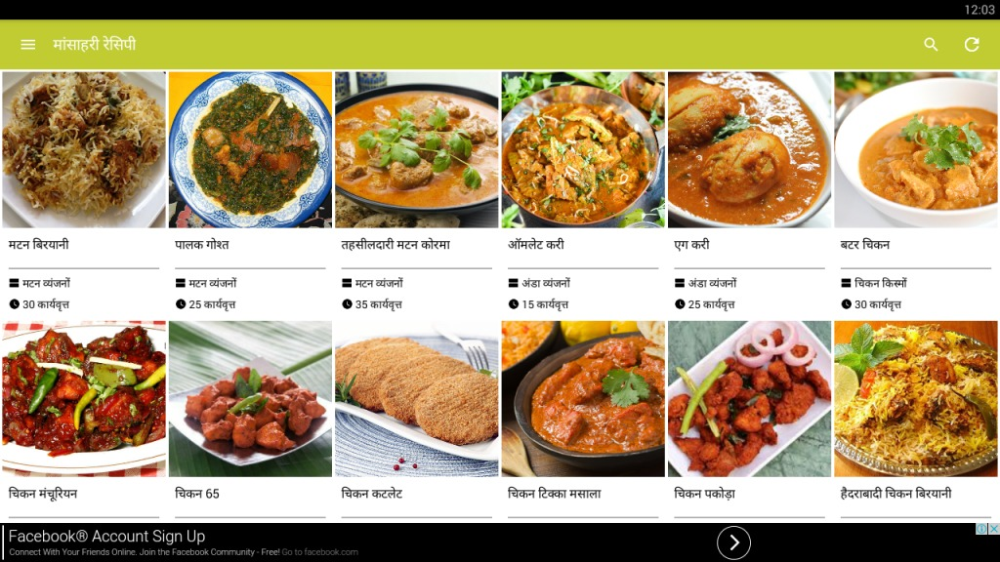

Select The Dishes

Here’s a list of popular Veg dishes
Vegetable Spring Rolls Crispy rolls filled with mix vegetables.
Mapo Tofu Tofu in a spicy , savory Sauce.
Vegetable Fried Rice Stir-fried rice with assorted vegetables.
Hot and Sour Soup A tangy and spicy soup,often made with mushrooms and Tofu.
Kung Pao Vegetable Stir-fried vegetables with peanuts in a spicy sauce.
Braised Eggplant Eggplant cooked in a savory sauce, often with garlic and ginger.
Vegetable Dumplings Dumplings filled with a mix of vegetables.
Chow Mein 8.Stir-fried noodles with vegetables.
Moo Shu VegetablesStir-fried vegetables served with thin pancakes and hoisin sauce.
Szechuan Green Beans Green beans stir-fried in a spicy, savory sauce.